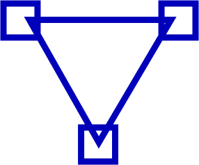

grade,grade calculator,grade scale,grade school,grade my professor,grade meaning,grades,grade synonym,grade potential tutoring,grade 1 diastolic dysfunction,grade calculator final,grade calculator points,grade on,kpu grading scale,grade percentage calculator,grade average calculator,what grade is a 70,of grade,for the grade,to grade,18.5 out of 25 as a percentage,170 out of 200 letter grade,12 grade point scale,grade 8 bolts,gradespeed grade codes,56 out of 75 grade,10.5 out of 15 grade,percentage to letter grade alberta,37.5 divided by 50,what is grade in education,what do grades mean in school,grade percentage,how much is 10 extra credit points,22.5 out of 25 as a percentage,what grade is 24 out of 28,25 out of 50 grade,83 percent grade,60 out of 90 grade,d2l final calculated grade,masters degree calculator,40 out of 70 as a percentage,68 out of 75 grade,percent grade calculator,grade machine misty city,how does powerschool calculate grades,grade calculator weighted,weighted grade calculator,is 20 percent of your grade a lot,grades definition,weighted rubric calculator,15 out of 25 as a percentage grade,what is a 10% grade,what is mean by grade in english,what is the mean of d grade,grade definition,what does grade mean,wiki grade,define grades,gread meaning in english,grades meaning,5th grade dictionary,grading definition,grades define,definition of grade,graded meaning,grade level meaning,118 out of 150 is what grade,simple weighted mean of grades calculator,grade dictionary,school grades synonym,le grade,definition of grades in education,meaning grade,grade evidence,score sheet synonym,high score synonym,score a deal synonym,high grades synonym,scoring synonym,scored synonym,score synonym,the meaning of grades,meaning of grades,meaning of grade,my grade is,what is a 75% grade,grade card,30 grade,view grade,by grade,be grade,grade by,what grade is 50%,is a d passing,what is a 6% grade,what is a 77 grade,what is a 60% grade,what does grade mean in construction,what each letter grade means,what is a 70% grade,what is a d+ grade,what is a c+ grade,what is a grade animal,has been graded meaning,what is construction grading,what is grade school considered,what is a 80 grade,what is an 84% grade,online grade,25 grade,what is grade,grades online,summer exam schedule,university of texas gpa calculator,grade all,grade work,what grade,the grade,good grade,best grade,what grade is,what is a t grade,in grade,at grade,grade it,my grade book,grade online,gradelink,grade results,what percent is a 2.0 gpa,what gpa is 71%,is 70 percent passing in college,what is 66 out of 70 as a percentage,what is the percentage of 60 out of 70,what percent is 44 out of 70,what is a 42 out of 70,what is 33 40 as a percentage,what is the percentage of 3% of 5%,how do you find 5 percent of a number,how do i find the percentage of a number,what percentage is 54 out of 70,what percentage is 49 out of 60,how do you calculate 500 percent,how do you find 60 percent of a number,what is the percentage of 36 out of 45,what is the percentage of 34 out of 45,what is a 36 out of 50,what is a 40 out of 50 grade,what percentage is 35 out of 60,what is 34 out of 60 as a percentage,what is a 63 out of 75,what score is 35 out of 50,what is weight tolerance,what is tolerance of weighing balance,what is residual unbalance,what percent is 55 out of 75,what is 40 out of 75 as a percentage,what is 45 out of 70 as a percentage,what is 15 out of 75 as a percent,what percent is 7 out of 50,what is 27 out of 50 as a percentage,what percentage is 9 out of 26,what percentage is 30 out of 50,what percent is a 13 out of 15,what is 14 out of 15 as a percentage,is 80% an a or b,what is 80 as a grade,how do you calculate pipe grade,what is a 2% slope,what angle is a 1 in 40 slope,how is semester grade determined,how do i figure out a weighted grade,how do you calculate your final grade,how do i calculate my grade average,what is 49 out of 60 as a percentage,how can i convert 100 marks to 30 marks,how do you convert percentage to marks,what is the formula to calculate percentage increase,what percent is 160 out of 200,what percent is 150 out of 200,what is 180 out of 200 as a percentage,what is 140 out of 200 as a percentage,what is a 19.5 out of 25,what percent is 20 out of 25,what percentage is 19.5 out of 20,what's 18 out of 25 as a percentage,what is 19 out of 25 as a percentage,what percent is 18.5 out of 20,what percent is 60 out of 75,what percentage is 15 out of 50,what percentage is 6 out of 50,what percent is 13 out of 15,what percentage is 13 out of 20,what is the percentage of 15 out of 17,what grade is 73 percent,what is total grade points on transcript,what is a pass gpa,what is graduation gpa,how do you figure out your gpa for a class,what is a 65 out of 75 grade,what is the percentage of 65 out of 70,what is the percentage of 75,what is 46 out of 50 as a percentage,what is a 45 out of 50 grade,what percent is 6 out of 50,what's 37 50 as a percentage,what percent is 36 out of 40,what percentage is 80 out of 100,what is the value of percentage,what percent is 3% of 5%,how do you calculate 80 percent,what is a 72 out of 80,what percent is 68 out of 80,what grade is 60 out of 80,what is 60 out of 100 as a percentage,how do you convert grade to percentage,how do i calculate my letter grade percentage,what is a 200 out of 300,what is 70 percent as a grade,what grade is 70 percent out of 100,what percent is 70 out of 80,what is 70 100 as a decimal,what grade is 73 out of 90,what is a 70 grade,what is the formula of percentage,how do i calculate percentage on calculator,what letter grade is a 93%,what is a 92 grade,is an 89 an a or b,what grade is a 96%,how do you give students grades,does grading help students learn,what is the purpose of grading,what are grading practices,what is the percentage of 140 out of 200,what is the percentage of 180 out of 200,how can i solve my grades,how do i enter grades in canvas,how do you override grades in powerschool,how can i calculate my grade in excel,what is a 2.5 gpa on a 4.0 scale in canada,what is a 2.5 gpa on a 4.0 scale,what is a b+ on a 12 point scale,what is a 7.0 gpa in percent,what is a 64 out of 80,what is a 61 out of 80,what is a 68 out of 80,how can i calculate my grade,how do you average grades together,what percentages are grades,what percentage is 57 out of 75,what is a 75 grade in college,is a a good grade,does plus minus affect college gpa,is 60 a passing grade,what is a failing grade in college,what number is 80% of 60,what percentage is $8 of $40,what percentage is 75 out of 80,how do you find 30% of a number,how do i calculate my grade with 200 points,what percent is 2 out of 16,what percent is 4 out of 16,what percent is 11 out of 14,what is 45 out of 50 as a percentage,what is 57 out of 70 as a percentage,how do i hide my grades on infinite campus,how do you post final grades on infinite campus,what is a progress grade,what is a 70 in letter grade,what grade is a 60 out of 80,what is 3.5 on a 4.0 scale,what are grade points mcmaster,what grade is 400 out of 500,what grade is 900 out of 1000,how do i calculate my grade with weighted percentages,how many marks is equal to 1 percent,how do you calculate a level score,how a levels are graded,how do you calculate your grade in a class,what percentage is an a at a level,how do i calculate 20% of my grade,how do i calculate my grade from points,what percent is 15 out of 22,what's a 14 out of 21,what is a 14 out of 20 grade,what is a 2.3 gpa in canada,what's a 2.0 gpa in percent,how do i calculate my grade system,how do you calculate quality points,what percentage is a 2.3 gpa,what percentage is an a in canada,what is a 70% in gpa,what percentage is a 2.5 gpa,can you get a 6.0 gpa,what is a 42 50 grade,what is 44 out of 50 as a percentage,what is a 93 in letter grade,is a 94 an a or b,what is an 80 grade,what is a 12 out of 20 grade,what letter grade is 18 out of 20,what is a 19 out of 20,what grade is a 18 out of 25,what is 76 out of 80 as a percentage,what grade is a 75 percent,what is a 76 percent grade,what is a 71 percent grade,what is the percentage of 27 out of 30,what is the percentage of 20 out of 30,how do you find the percent of a whole number,what grade is a 16 out of 18,what percentage is 9 out of 16,what percent is 15 out of 75,what grade is a 58%,what is a good grade,is a 65 a passing grade in middle school,what is a 61 grade,what is a 10 out of 15,what is 12 out of 15 as a percentage,what is 7 out of 20 as a percentage,what is 15 out of 20 as a percentage,how do i calculate my final grade,how do i calculate my grade with percentages,what is the lowest percentage for ad,how many points does a 100 bring your grade up,is a gpa of 5.0 good,what is a good gpa on a 9 point scale,what percentage is a 4.5 gpa,how do you curve an exam,is grading on a curve good,what does grading on a curve mean,how do you curve a grade with a square root,what is a 3.7 gpa in canada,what grade is a 170 out of 200,what is a 160 out of 200,what is a 2.3 gpa in percentage,what is a 9 out of 15,what percentage is 10 out of 15,how to add a test to a grade,what is an 84 on a 4.0 scale,on grade,a grade a,grade 2 concussion,grade my draft,grading scale,site grade,gradescope,grade level,grade road,grader machine,how is a grade point average calculated,what is 9 out of 15 as a decimal,what percent is 5 out of 15,what is the percentage 10 out of 15,what percent is a 9 out of 15,what percentage is 6 out of 15,what is a 47 out of 50,what percent is 44 out of 50,how much is 200 points in percentage,how do i figure out my grade with points,how many points is a major grade worth,how can i see my child's grades online,how do i check my grades online for middle school,how can i check my school grades online,should parents have access to college students grades,what is a 5.0 gpa equivalent to,do summer courses count toward gpa mcmaster,what is a 5.0 gpa in canada,what grade percentage is an a,what is a 68 grade,what percent is 10 out of 15,what's a 12 out of 15,what percent is a 14 out of 15,what percent is 11 out of 15,what percentage is 390 out of 500,what percent is 170 out of 200,what grade is 700 out of 1000,what percentage is 8 out of 12,what is an a out of 100,what grade is an 89 out of 100,what is an a in percentage,what percent is 57 out of 70,what's a 60 out of 70,what percent is 55 out of 60,what percent is 66 out of 70,what is 10 out of 15 as a percentage,what is a 11 out of 15,what is 9.5 out of 15 as a percentage,what is a 13.5 out of 15,what percentage is 16 out of 50,what is a 42 out of 50 grade,what is a 37 out of 50,what is 48 out of 60 as a percent,what grade is 44 out of 60,what is 45 out of 60 as a percentage,what is 69 out of 75 as a percentage,what percent is 65 out of 75,what is a 75 percent grade,what is a 20 out of 25 grade,what is 21 out of 28 as a percentage,what percent is 25 out of 28,how do you convert a 12 point gpa to a 4.0 scale,what is a 50 out of 60,what is a 51 out of 60,what is a 56 out of 60,what letter grade is 70 out of 100,what grade is a 70 100,how do you calculate 100 marks,is 70 percent a good grade in cbse,what is the meaning of positional grade,what is a1 grade in cbse,what percentage is 7.6 cgpa,what's a 60 out of 75,what is a 75 grade,what is ums a level,how many ums for an a * at a level,how do ums marks work,what are raw marks and ums marks,how do you show final calculated grades in d2l,how do i make my grades visible on d2l,how do you check your class average on d2l,how do i set up grades in d2l,what grade is a 70 out of 90,what is a 90 percent grade,how do i calculate my grade based on points,how do you calculate your grade,how do you see your grades on skyward,how do you calculate grades in high school,what does no count mean on skyward,how does powerschool calculate gpa,how do you finalize grades in powerteacher pro,how do you change grades on a gradebook,what does final grade exempt score mean,what is a multiple multiple choice question,what are the types of multiple choice questions,what is partial grade,how do i create a multiple choice question in moodle,how do you calculate extra credit into your grade,how many points should extra credit be worth,can extra credit lower your grade,how many students are in mnps,what is the grading scale for tennessee,how much do nashville teachers make,how do you add bonus points in canvas,how does extra credit work,how do you add a percentage to a point,what is a grade of 40 out of 50,what grade is 35 out of 50,what is a 28 out of 50,what is a grade in biology,how are biology lab grades calculated,what fin grade means,is a 64 a passing grade,how do i calculate 15% of my grade,how many points does a 50 bring down your grade,what grade is a 50 out of 100,is ad passing at depaul,what percent is 15 out of 24,what is a 15 out of 25 grade,what percent is a 15 out of 17,what is a 5.0 gpa mcmaster,how do you add percentage to a grade,how do you calculate grades with percentages,how do you figure out your grade when things are worth different percentages,how are midterm grades calculated,how do you look up your grades online,how can i check my grades,what percentage is 15 out of 25,what percent is 21 out of 25,what is a 22 out of 25,is d passing,what grade is 60%,what is a 78 grade,what is an 88 percent grade,what is the percentage of 42 out of 60,what percent is 57 out of 60,how many questions can i get wrong on a 50 question test,how do you calculate curves on a test,how does grading on a curve work,what does it mean to curve a test,how do you adjust grades on a curve,what is a 3.0 on a 4.0 scale,is a gpa of 3.7 good,what gpa do you need to get into west chester university,what is the gpa requirement for western carolina university,what sat score is required for western carolina university,does west chester require letters of recommendation,what is a 100 out of 150,what percentage is 30 out of 150,how do you calculate 150 percent,what is the percentage of 90 out of 150,how can i check my high school grades online,how can i see my grades,what is a 4.0 gpa at york,what is a 8.0 gpa on a 4.0 scale,what is a passing grade at york university,what grade is a 160 out of 200,what is the grade for 42 out of 50,what is simple weighted mean of grades,how do i calculate grades with different weights,what is a 5.0 gpa,what grade is a 40 %,what is zero based grading,how many ums is an a,how many ums is an a in math edexcel,how is ums calculated,how do you shoot grades with a laser level,how many questions can you miss on a 50 question test to make a 70,how many points is a 25 question test,how many points is each question worth on a 30 question test,how do you calculate how many questions you got wrong,how do you calculate letter grade from points,how many quality points is a,what are gpa quality points,how do you calculate quality points in excel,what is a full course load at mcmaster,how do you calculate pass rate,what is the pass mark out of 15,how do i calculate a pass percentage in excel,how do you calculate passing marks out of 70,how many units is a btec national diploma,how many credits is a btec national diploma,how is btec graded,what is 112 ucas points in btec grades,what percent is 8 out of 15,what are quality points,how do i check my grades for school,what are the grades in middle school,what are the grades in school,how do i stop stressing my grades,is an a a bad grade,how do i let go of a bad grade,how do you deal with grade anxiety,what does a in grades stand for,what does dropping a letter grade mean,how do i enter grades into canvas,how do you enter grades in powerteacher,how do i add assignments to canvas gradebook,what is the grade scale for elementary school,what is the school grading scale,what is a 77 grade in middle school,how do you grade with standards based grading,what percentage of your grade is homework,does homework affect your grades,how many points is homework worth,what are quiz grades worth,how many credits is a btec level 3,what is a btec distinction equivalent to,what percentage of your grade is a test,what is the average of 70 and 100,what is rubric scoring guide,what percentage is a 2+,what is a 4 point rubric,what is 135 150 as a percent,what is 47 out of 60 as a percentage,what is the percentage of 45 out of 60,what is a 60 as a grade,what is a 56 percent grade,how many ucas points is an a * at a level,how many ums is an a in math,what grades are 320 ucas points,grades calculator,what is grade a,the grade a,grade in,gradescope login,grade word,grade calculator with weights,grade calculator college,a grade percentage,what is a 70 in letter grade,what is a c grade percentage,what is a b- grade,grading system,what does an e grade mean in high school,gradescope autograder,how can i bring my grade up from ac,are c's bad in college,how can i get my grades up in college,how do you not feel bad about bad grades,how are grades calculated in college,what is the equivalent of 1.75 grade,how are average grades calculated in college philippines,what is the equivalent of 2 in college grades,what is a 2.5 on a 4.0 scale,what percentage is 3.73 gpa,how do i add an extra credit to an assignment in canvas,what is the grading scale,what is a school performance score,what is the highest gpa in canada,what gpa do you need for smu,what sat score is required for smu,does smu have bell curve,how many points does a 0 bring down your grade,how do you curve a grade,do college professors give extra credit,how do i get extra credit,how does a curve grade work,what is the bell curve grading system,what is a 25 out of 30,what grade is 25.5 out of 30,what is the grade for 20 out of 25,what is the percentage of 20 30,what percentage is an a grade in the uk,what percentage is a 2 1,how is gpa calculated uk,how can i get my grades online,how do i check my students grades,what simplified 36 100,what grade is a 68 out of 100,what is the grading scale for university,what mark is 76%,what is a pass mark in university,what is a b+ grade,what is a gpa of 7,is a 6.1 gpa good,what percentage is 65 out of 90,what percentage of one number is another,what is 50 out of 60 as a percentage,how do schools get graded,what are the grades in grade school,what is the grading scale at ohio state,how does osu calculate gpa,can i get into ohio university with a 2.5 gpa,what is the average gpa for ohio state university,how are semester grades calculated,how do you find the average of different weights,how do you calculate a grade curve,what does standard deviation mean for grades,what is grade curving mean,what does median mean in grades,how do you calculate exam marks percentage,how can we calculate percentage of marks,how do you calculate a 10th mark percentage,how are ums marks calculated,how do you convert grades into marks,what gpa do you need for umass amherst,what is a c+ on gpa,how do i calculate my gpa credit hours,how do i find my major gpa,how do you calculate your overall grade,how are a level grade boundaries calculated,how do you drop a low score in canvas,what does dropping a grade mean,how do you find the average grade on canvas,how do you drop a grade,what is a 7.5 out of 10 grade,how do you grade a bell curve,what is standard deviation for grades,what does standard deviation of test scores mean,how do you calculate grades with different percentages,how do i figure out what my grade is in a class,what are weighted grades,what gpa is abbc,what does an e grade mean at asu,how does asu calculate gpa,what is the average gpa for asu,how do you use if scores on canvas,how do i view my grades on canvas,what does it mean when it says course assignments are not weighted,what is an 81 on a 4.0 scale,what is an 85 average on a 4.0 scale,how do i find out my gpa on a 4.0 scale,what is a b on a 4.0 scale,what does weighted mean in grades,what does calculated weight mean,what does contribution to course total mean,what does calculated weight mean on moodle,what gpa is required for mcgill,what is a 65 gpa in canada,what gpa is a pass,what percentage is a 3.0 gpa,how do i calculate a percentage,is c+ a passing grade,what does final calculated grade mean,how do you check your overall grade on d2l,what is 15 out of 20 as a percent,what is 15 20 as a decimal,what's a 13 out of 20,what is the formula of grade,how do i calculate my grade manually,how do i calculate grades in excel,how do you calculate grades in excel 2010,is a 7.0 gpa good,what percentage is a distinction at unisa,what gpa is a credit average,what percent is 9 out of 13,what percentage is 10 out of 13,what percent is 11 out of 13,what is 9 out of 12 as a percentage,what is a 3.0 gpa on a 4.3 scale,what is a 4.3 gpa equivalent to,what is a 3.25 gpa equal to in percentage,what percentage is a 2.7 gpa,how is an r score calculated,what is the highest possible r score,how do i calculate my grade based on percentages,what letter grade is 15 out of 20,how do i check my grades online,how do i check my child grades online,how do you check your gpa on student portal,how does a grade curve work,can you retake midterms,what to do if you fail a midterm,how do you pass a midterm,how do i figure out what my grade is,how do you convert a raw score to a percent,how do you find the percentage of a raw score,how do i calculate my grade from points to percentage,what is a raw score on a test,what does it mean to curve a grade,how does curving a grade work,what is the grading scale for kindergarten,how do students grade their work,what does a grade of e mean,is a d+ a passing grade,how do you weight grades in canvas,how do i calculate my grade based on weight,how do i calculate the full amount from a percentage,how do i calculate my current grade,what is 16 out of 25 as a percentage,what is 16 out of 20 as a percentage,how do you write 16 25 as a percentage,what percentage is 18 out of 25,how does cu boulder calculate gpa,is ad passing at cu boulder,what are graded credits,what is ad percentage,how can i calculate my grades,how can i raise my grades in a week,how do i overcome bad grades,how can i get higher grades,how can i improve my exam results,how do you calculate a monthly payment,how is your gpa calculated,what is a standards based grading system,do letter grades motivate students,how do i find my students grades,how can i check my child's grades,how do i find my gpa on student portal,what is a 3.75 gpa in letter grade,is a 92% an a or a,what is a b in a grade,what is 16 out of 21 as a percentage,what is 16 out of 22 as a percentage,how can i get my grades up in one day,how do you turn your grades around,how can i get my grades up in 2 weeks,how can i raise my grade in a week,how can i check my grades online,where are my grades blackboard,what is gradecam,what is the percentage of 23 out of 25,what percent is 5 out of 25,what percent is 25 out of 30,what is the equivalent of 25%,what is considered a b+ in percentage,what is an a grade gpa,how is cgpa calculated in carleton,what are quality points carleton university,how is the cgpa calculated,what is the percentage of 7.0 cgpa,how do i figure out my grade average,what percentage is an a in middle school,how do you calculate your grade in high school,what is a 70 percent grade,what is the percentage for an a+,how do you look at your grades online,how can i check my child's grades online,what percentage is a 10 out of 12,how do i calculate my test grade,what is flubaroo,what grade is a 67%,what percentage is a 2 1 degree in the uk,what marks for a 2.1 degree,how do you calculate your semester average,how do you combine two grades,how do i see grades in google classroom,how do you assign grades in excel,what's considered an a,what is a b+,is a 93 an a or a minus,how do you deal with bad exam results,how do you deal with bad grades,what do you do after a bad test,what is a normal distribution of grades,gradescope api,gradescope purdue login,gpa thailand,71 is what grade,24.5 out of 30 as a percentage,64 out of 70 is what percent,what percent is 33 out of 45,52 out of 70 as a percentage,36 out of 45 grade,35 out of 60 grade,weight tolerance calculator,45 out of 75 as a percentage,26 out of 50 is what percent,what is 12.5 out of 15 as a percentage,pipe laser grade chart,semester grade chart palm beach county,110 out of 150 percentage,skyward grade marks,grade checker training,infinite campus in progress grades not showing,22.5 30,160% of 200,19.5 25,50 out of 75,what grade is 13 out of 17,grant macewan grade scale,65 out of 75 percentage,12.5 out of 15 as a percentage,37.5 out of 50 grade,grade connect pa,40 out of 70 is what percent,douglas college grading,what grade is 24.5 out of 30,what grade is 80 out of 90,percentage instructors grade 6,cookeville catering,george brown grades,what is 82 out of 100,70 out of 100 as a percentage,what percentage is 70 out of 90,50 out of 75 percentage,a 93 100,used grademaster for sale,grading procedures for teachers,gradebook help,170 out of 200 grade,making the grade software manual,msvu grades,mcmaster grade converter,64 out of 80 grade,uoit grading,grade plus,george brown grading system,66 is 80% of what number,what grade is 215 out of 250,45 out of 70 grade,infinite campus not showing grades,what grade is 70 out of 80,mcmaster grade conversion,what is 182 out of 300,how to calculate a level grades,how to calculate lab plus lecture grade,14 out of 22,nait grades,nait grading,laurier grading system,unbc grade scale,grade-x,x2 grading system,ole miss letter grades,42.5 out of 50 grade,grade configuration,93 100 a,uop degree calculator,simple grade,degree calculator st andrews,18.5 out of 20 grade,76 out of 100 as a percentage,26.5 out of 30 as a percentage,10 out of 16 grade,school grading scale 2012,7.5 out of 15 grade,final exam calculator griffith,grade average calculator nz,best test curve generator,mcmaster grade chart,what grade is 140 out of 200,what's a 180 out of 200,st andrews degree calculator,nait grading system,9 out of 15 score,8 out of 15 grade,what letter grade is 48 out of 50,what is 150 points out of 200,palm beach county grading scale,acadia grading scale,acadia university grading scale,kids grades online,mcmaster university grading system,im worried about my grade,a 93-100,grade 13 out of 15,592 out of 860 is how much out of 100,90 100 a,douglas grade,59 out of 70,16 out of 50 grade,ez graders with halves,48 out of 60 grade,69 out of 75 grade,what grade is a 20 out of 28,mini christmas light commercial repair box,grade connect archdiocese,academic grade check form,mcmaster 12 point grade scale,unbc grades,53 out of 60 grade,70% out of 100,b1 grade percentage,65 out of 75 grade,what does ath mean in skyward,misty city software grade machine,ums a level calculator,d2l class average,r script learning grading,66 out of 90 grade,mcmaster grade system,how does skyward calculate grades,how does powerschool grading work,score grace calculator,gradespeed help,grading multiple choice questions,mnps grades,grade check form middle school,grades 4-6,how to add bonus points to a grade,what does ath stand for on skyward,misty city grade machine,ez grader teachers download,what grade is 32.5 out of 50,biology grading system,depaul grading system,15 out of 24 as a grade,mcmaster 12 point system,how to add 25% to a grade,midterm grade chart,look at grades online,18.75 out of 25 grade,how are grades broken down,how to grade in brightspace,14 wrong out of 60,test calculator on curve,how to put in grades,yorku gpa calculator,wcu grades,what grade is 120 out of 150,edugrade,grades of green verte,high school grades online,york calculator,grading system out of 50,grades 4 6,mean grades,base 40 grading system,ums mark calculator,grade checking construction,70 percent of 25 questions,no points grading system,quality points ufv,mcmaster grade point system,ez grader download,pass percentage calculator,btec national diploma calculator,9 out of 15 letter grade,uoit quality points,www grades com,worried about my grades,what does half a letter grade mean,how to add grades in gradebook,letter grade scale elementary school,how much does homework count towards your grade,btec results calculator,tests are worth 70 percent of grade,mcmaster grades system,calculating rubric grades,what letter grade is 135 out of 150,46 out of 60 as a grade,a level grades calculator,i got ac on my first college exam,grade machine software,how to put grades in a gradebook,mygradebook student,how to compute grades in college philippines,how to calculate extra credit into your grade,school grading scale 2013,smu grades scale,so quick putting zeros in my grades facebook,pinnacle checking grades,grade machine download,grade with a curve calculator,thailand university gpa,university grading system in thailand,thai gpa calculator,thailand grade levels,thailand education curriculum,gpa wiki,how to calculate gpa,french grading system to gpa,grade marks and percentages,high school grading system,25.5 out of 30 as a percentage,25 out of 30 as a percentage,25/30
Grades - start learning now!
Get a certificate confirming your knowledge in your professional field
The best course platform for you to get new knowledge. Get absolutely free access to all platform features.
Start learning now
Features
Features of our course platform
Decentralized Platform
Free Courses
Learning methods

You can host the courses on different servers.
We have no need in balancing traffic, because you publish courses on our servers, which are not fully loaded with people.
Teach
Host courses on our platform and invite students
Custom types of tests available
We have different types of tests for a variety of learning classes.
If we don’t have the test type, that fits you, you can create your own test template
Different assessment systems
We have different types of tests for a variety of assesment systems.
If we don’t have the assesment system, that fits you, you can write to our support.